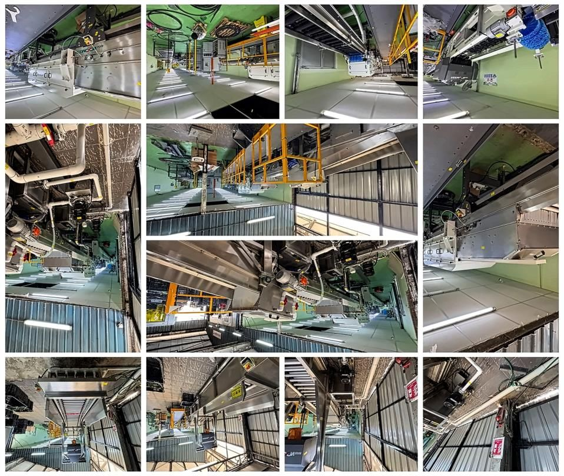
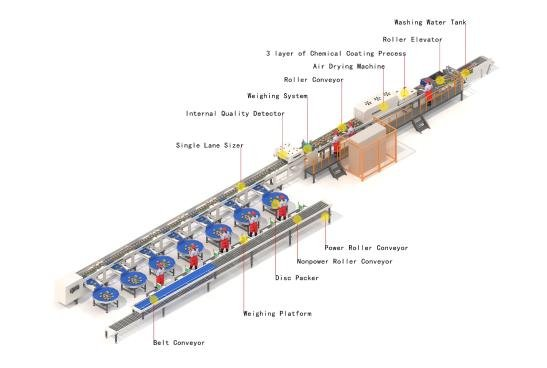
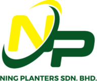
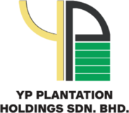

Automatic pineapple grading line for Kulim.
Malaysia’s first Reemoon wet-and-dry pineapple line, built for export-grade fruit under the Strategic Program for Export Market Strengthening (LPNM × Kulim).

Kulim (Malaysia) Berhad
Late 2024
Strategic Program for Export Market Strengthening (LPNM × Kulim)
Capabilities: fruit quality and defect detection, waxing and weight-based sorting. The internal-quality scanner detects water core and translucency, defects you can’t see from the outside.

Seven sections, one pass.
Washing
Wet section
3-layer coating
Wet section
Drying
Dry section
Weighing
Dry section
Scanning*
Dry section
Grading & separation
Dry section
Packaging
Dry section
* Scanning detects water core and translucency.
Organisations that have placed their trust in us.


More case studies on the way.
Each new installation gets its own page: client, capacity, timeline and photos from site. Ideal material for tender submissions and procurement teams.
Want a line like this for your crop?
We’ll size the line to your volumes and floor space, then plan the CPPC layout with you.